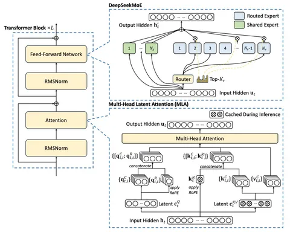

В конце прошлого года вышел технический отчёт модели DeepSeek-V3. У неё 671 миллиардов параметров, из которых активные — 37 миллиардов (то есть меньше 1/16). Обучение длилось два месяца на 2 тысячах GPU H800. Впервые в истории LLM обучали на FP8 и с высокой степенью разреженности (sparsity). Полученная модель вошла в топ-10 на Chatbot Arena. Кроме того, DeepSeek-V3 хорошо показывала себя в бенчмарках.
Изучили технический отчёт и рассказываем, какие необычные и даже новаторские решения в нём есть. Обзор получился объёмным, поэтому мы поделили его на два поста.
MLA
Метод, который называется Multi-head Latent Attention (MLA), используют как альтернативу Grouped Query Attention (GQA) для снижения объёма KV-кэша. Этот подход апробировали ещё в июне 2024 года в DeepSeek-V2. Как утверждают разработчики, по качеству MLA превосходит GQA и Multi-Query Attention и сопоставим с Multi-Head Attention.
Суть MLA заключается в сжатии скрытого представления в латентные вектора и хранении их на продакшене вместо Key Value. Во время генерации токенов KV восстанавливается из латентных векторов, что требует отдельных, но не слишком затратных вычислений.
Такой подход позволяет здорово экономить память, однако лишает возможности применять Rotary Position Embedding (RoPE) — способ несовместим с низкоранговым сжатием KV. Чтобы обойти проблему, в DeepSeek прибегли к методу Decoupled Rotary Position Embedding. Он предполагает добавление к каждой голове вектора с RoPE.
В результате не происходит деградации качества из-за того, что для большей части каждой головы позиционные эмбеддинги не обрабатываются. При этом модель сохраняет способность учитывать очень длинные контексты, так как её производительность не ухудшается даже при значительном удалении токенов от начальной позиции.
После претрейна разработчики расширили контекст, используя YaRN-подход (Yet another RoPE extension) — c 4 тысяч токенов до 128 тысяч. В тесте Needle In A Haystack, по условиям которого нужно найти ответ на вопрос в контексте на 128 тысяч токенов, DeepSeek-V3 в 100% случаев справлялась с задачей. Сама по себе она несложная, но демонстрирует умение модели работать с большими контекстами.
MoE
По сравнению с DeepSeek-V2 изменился подход к Mixture-of-Experts. Здесь есть общие эксперты (Shared experts), которые применяются ко всем входным токенам, и маршрутизируемые эксперты (Routed experts), среди которых выбираются лучшие для решения конкретной задачи.
Специальный лосс для контроля загруженности экспертов не используется. Вместо этого для каждого эксперта вводится определённый bias, через который и осуществляется балансировка. Если эксперт вызывается слишком часто, то bias уменьшается, слишком редко — увеличивается. Благодаря этому обучение получается более стабильным, чем при использовании лоссов.
Однако разработчикам всё-таки пришлось ввести балансировочный лосс. Описанный выше способ приводит к тому, что эксперты становятся домен-специфичными. Дополнительный лосс позволяет избежать этого, создавая разнообразие в выдаче. Благодаря хорошей балансировке нагрузки в процессе обучения DeepSeek-V3 не отбрасывает ни одного токена.
Для снижения затрат на коммуникации использовали метод Node-Limited Routing. Он вводит ограничение на число хостов, куда может быть направлен токен. Сперва выбираются хосты, которые содержат необходимых экспертов, а затем среди них с помощью алгоритма top-K routing выбираются лучшие для конкретного токена.
Во второй части расскажем о FP8-квантизации, результатах на бенчмарках и не только. Не переключайтесь!
Разбор подготовил
Душный NLP
